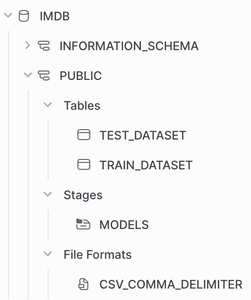
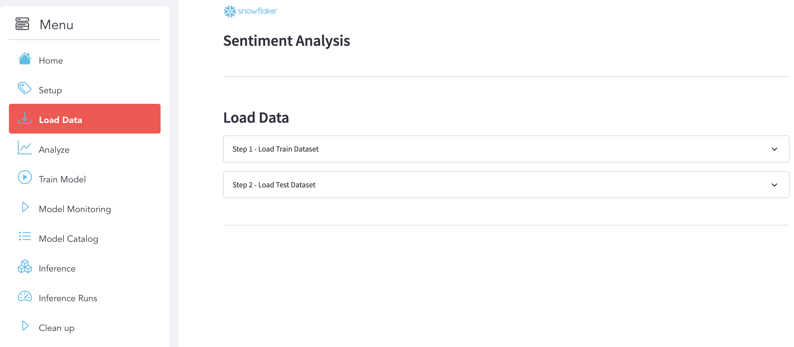
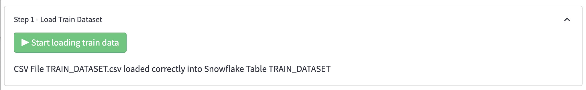
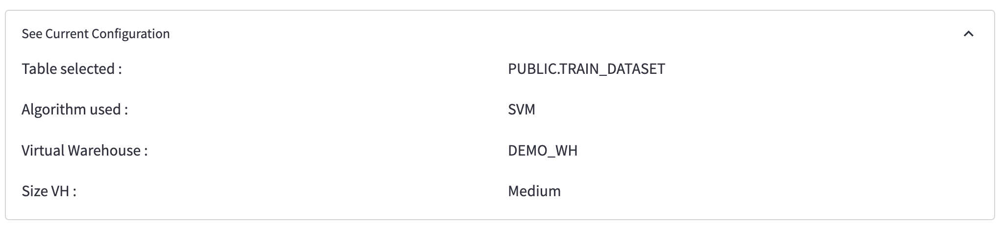
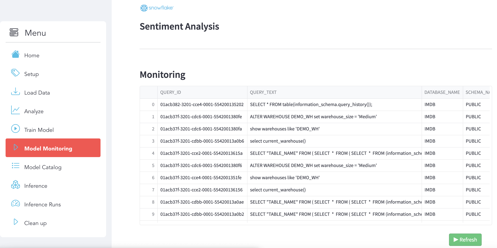
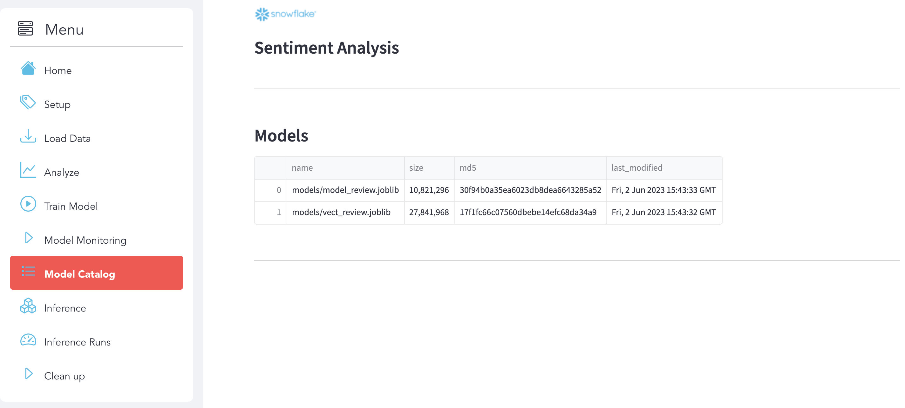
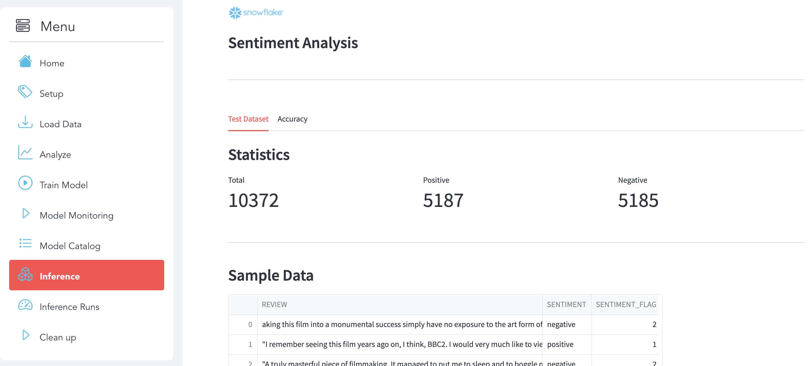

This Quickstart will demonstrate how you can perform Natural Language Processing (NLP) and ML within Snowflake using Snowpark Python and Streamlit. We'll use these tools to perform sentiment analysis with Snowpark (feature engineering, training, and prediction).
Prerequisites
- Working knowledge of Python
- Familiarity with Snowflake
What You'll Learn
- Do NLP and ML on Snowflake using Snowpark
- Load data into Snowflake
- Transform your data using Snowpark DataFrame API
- Train a scikit-learn model using Store Procedure inside Snowflake
- Deploy a model using UDF Function
- Inference with UDF Function
- Use Streamlit with Snowpark
What You'll Need
- A Snowflake Account with ACCOUNTADMIN role. If you don't have one, you can register for a free trial account
- Git installed
- Python 3.8 installed
- Conda Installed
- GitHub Account
- VSCode Installed
What You'll Build
You will build an end-to-end Data Science workflow leveraging Snowpark for Python and Streamlit around the Sentiment Analysis use case.
This section covers cloning of the GitHub repository and creating a Python 3.8 environment.
Clone GitHub repository
First, clone the source code for this repo to your local environment:
git clone https://github.com/Snowflake-Labs/snowpark-python-demos.git
cd snowpark_nlp_ml_demo/
Setup Python Environment
Create a conda environment. Let's name the environment nlp_ml_sentiment_analysis.
conda update conda
conda update python
conda env create -f ./snowpark-env/conda-env_nlp_ml_sentiment_analysis.yml --force
Snowflake Credentials
Update the Snowflake connexion file: connection.json
{
"account": "",
"user": "",
"password": "",
"role": "ACCOUNTADMIN",
"database": "IMDB",
"schema": "PUBLIC",
"warehouse": "DEMO_WH"
}
Activate Python environment using conda
conda activate nlp_ml_sentiment_analysis
Run Streamlit App
cd streamlit
streamlit run Sentiment_Analysis_APP.py
[OPTIONAL] : Notebook
The full code of the use case is also available in this Notebook Sentiment_Analysis_NLP_with_Snowpark_ML.ipynb. Once the Setup is done (Create the Snowflake Objects and load the data) you can run all the Notebook.
cd notebook
jupyter notebook
Option 1 - Environment setup via the Streamlit App
Use the Streamlit App to setup Snowflake Objects

Make sure you have this result:

You can check directly with Snowsight that the data are available in Snowflake.

Option 2 - Manually : with Snowsight
First, log into your Snowflake Account (Snowsight Web UI) using your credentials.
Then, run the following SQL commands to create the DATABASE:
USE ROLE ACCOUNTADMIN;
CREATE DATABASE if not EXISTS IMDB;
Run the following SQL commands to create the TABLES:
USE DATABASE IMDB;
USE SCHEMA PUBLIC;
CREATE TABLE if not EXISTS TRAIN_DATASET (
REVIEW STRING,
SENTIMENT STRING
);
CREATE TABLE if not EXISTS TEST_DATASET (
REVIEW STRING,
SENTIMENT STRING
);
Run the following SQL commands to create the WAREHOUSE:
CREATE WAREHOUSE if not EXISTS DEMO_WH WAREHOUSE_SIZE=MEDIUM INITIALLY_SUSPENDED=TRUE AUTO_SUSPEND=120;
Run the following SQL commands to create the STAGE:
CREATE STAGE if not EXISTS MODELS;
USE IMDB.PUBLIC;
We used Python code to load the data into Snowflake. In order to simplify code execution you can click on the right button to start loading the data.
What You'll Do
Use use the section Load Data:

Step 1 : Load Train Dataset
Here is the display that we expect after the execution.

Step 2 : Load Test Dataset
Here is the display that we expect after the execution.

What You'll Learn
Load Data into Snowflake with Snowpark
with z.open("TRAIN_DATASET.csv") as f:
pandas_df = pd.read_csv(f)
session.write_pandas(pandas_df, "TRAIN_DATASET", auto_create_table=False, overwrite=True)
What You'll Do
Use use the section Analyze to explore and analyze the datasets and see some metrics.

Select your data
Choose the dataset that you want to analyze:

Stats
Here is some statistics related to the dataset:

Sample Data
You can see a sample of data:

Data Description
Here a description of your dataset:

What You'll Learn
Analyze your dataset with Snowpark
table_to_print = "TRAIN_DATASET"
df_table = session.table(table_to_print)
df_table.count()
pd_table = df_table.limit(10).to_pandas()
pd_describe = df_table.describe().to_pandas()
What You'll Do
Use use the section Train Model:

Step 1 : Select the dataset
Choose the training dataset to build the model:

Step 2 : Select a Virtual Warehouse
Select a Virtual Warehouse:

Step 3 : Check the configuration

Step 4 : Run model
To run the model training, click on the button below:

What You'll Learn
Create the training function
We created a function called train_model_review_pipline():
def train_model_review_pipline(session : Session, train_dataset_name: str) -> Variant:
...
that will do the following steps:
- Data Preperation: using Snowpark DataFrame API, we will trasnform the data to make it ready for the training
- Text Representation: create the Matrix by leveraging Python libraries
- Fit the Model: Fit the model
- Save the Model: Use stages and tables to ingest and organize raw data from S3 into Snowflake
Register the function as a Store Procedure
Then we registered the function as a Store Procedure:
session.sproc.register(func=train_model_review_pipline, name="train_model_review_pipline", replace=True)
Call the Stored Procedure
And use this Python code to call the SP that wil be execute the training into Snowflake with a Snowflake Virtual Warehouse:
session.call("train_model_review_pipline", "TRAIN_DATASET")
You can also execute the training from Snowsight directly with SQL code:
CALL train_model_review_pipline("TRAIN_DATASET")
Deploy the model using an UDF Function
@udf(name='predict_review', session=session, is_permanent = False, stage_location = '@MODELS', replace=True)
def predict_review(args: list) -> float:
import sys
import pandas as pd
from joblib import load
model = load_file("model_review.joblib")
vec = load_file("vect_review.joblib")
features = list(["REVIEW", "SENTIMENT_FLAG"])
row = pd.DataFrame([args], columns=features)
bowTest = vec.transform(row.REVIEW.values)
return model.predict(bowTest)
Monitore your execution using QUERY_HISTORY
Use use the section Model Monitoring. You can use Snowsight (Snowflake UI) as well to get more details and see the Query Details and Query Profile.

Model Catalog
Use use the section Model Catalog. Here you can see your models that you deployed and saved on Snowflake (Stage):

Inference
Use use the section Inference to analyze the Test Dataset and see the Accuracy of your Model after the Inference.
Analyze Test Dataset Click on the Test Dataset sub-section to explore the dataset.

Accuracy Click on the Accuracy sub-section to see the details.

Inference Runs
Select the new dataset that you want to predict and the Inference will run automatically.

Use the section to clean Up to remove all the Snowflake Objects and the Data that you already load:

Congratulations! You've successfully performed the Sentiment Analysis use case and built an end-to-end Data Science workflow leveraging Snowpark for Python and Streamlit.
In this quickstart we demonstrated how Snowpark Python enables rapid, end-to-end machine learning workload development, deployment, and orchestration. We were also able to experience how Snowpark for Python enables you to use familiar syntax and constructs to process data where it lives with Snowflake's elastic, scalable and secure engine, accelerating the path to production for data pipelines and ML workflows.
What we've covered
- Do NLP and ML on Snowflake using Snowpark
- Load data into Snowflake
- Transform your data using Snowpark DataFrame API
- Train a scikit-learn model using Store Procedure inside Snowflake
- Deploy a model using UDF Function
- Inference with UDF Function
- Use Streamlit with Snowpark